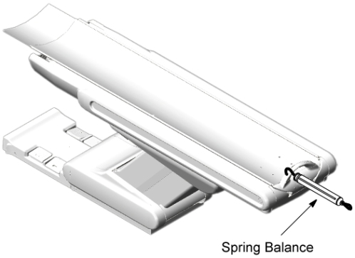
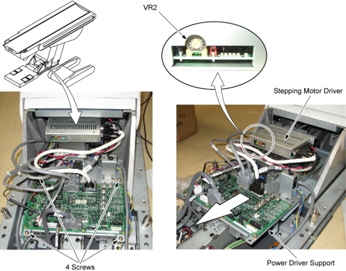

Operating Documentation
Direction 5181166-800, Rev# 7
BrightSpeed Select Service Methods Adv
Operating Documentation |
| Required Persons | Preliminary Reqs | Procedure | Finalization |
|---|---|---|---|
| 1 |
| Last Revised: | 16 March 2007 |
| Item | Qty | Effectivity | Part# | Manufacturer | |
|---|---|---|---|---|---|
| Spring Balance (Fish Scale) : 20 kg maximum | 1 | - | - | - | |
Raise the Table to it's highest position.
Move the cradle to the Out Limit position by hand.
Place a weight (object or person) of approximately 55 kg on the cradle.
Set a spring balance to the cradle end as shown in illustration below.
Illustration 1: Spring Balance Setting

Check the value of the maximum motor torque for SPEED 1 :
Press the IN button to move the cradle in the IN direction.
(Do not press the In and Fast buttons simultaneously, or speed will be changed.)
While the cradle is moving in the IN direction, the motor will automatically stop at some position of the cradle: read the spring balance at this position.
Verify that this value (maximum motor torque) is 17∼18 kg at around 1000 mm from the Out limit position.
If the value is out of specification, adjust it by turning the VR2 on the Stepping Motor Driver.
| NOTE: | Wait for the motor driver to cool before performing another motor torque measurement. |
Illustration 2: Stepping Motor Driver

No finalization required.